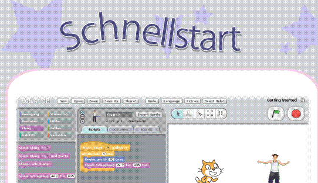
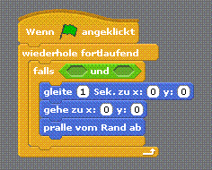
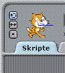
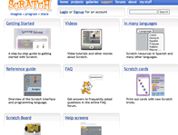

Anleitung zum Anfangen

Schritt-für-Schritt Anleitung für Scratch.
Hilfe Seiten

Finde heraus, was die Blöcke können.
Referenz

Überblick über die Scratch-Oberfläche und die Programmiersprache.
Scratch-Hilfe Seite im Internet

http://info.scratch.mit.edu/Support/
Suchst du andere Sprachen?
Schau doch auf die
Scratch Sprachen Seite
.
© 2007-2009 Lifelong Kindergarten Group, MIT Media Lab